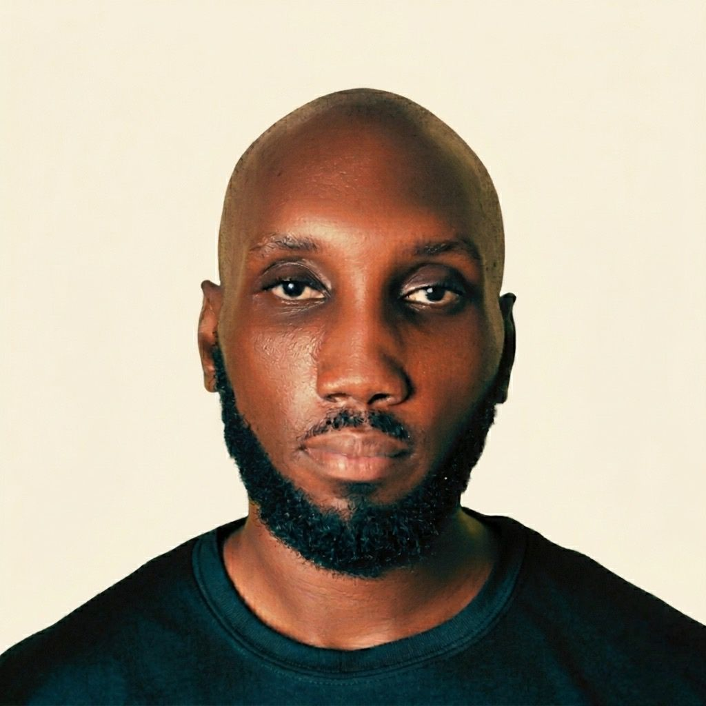

Repeat work in. A system that runs it out.
I'm Ato Sam, an AI systems consultant. I find the repeat work eating a small team's week, build the system that runs it, and hand it over so you own it.
The record in numbers
-
Source data
14
reports from six years of programme work, turned into one structured dataset.
-
Live site
97
Lighthouse mobile performance on feedingforchrist.org. Accessibility, best practices and SEO all score 100.
-
Own system
31
custom skills in the AI operating system I run my work from.
What I build
Systems that take a recurring piece of work off a team's plate, with a review step so you can trust the output.
- Lead and outreach systems. Find prospects, score fit against your ideal client and draft outreach for you to approve.
- Content engines. One recording becomes a week of posts, with the editing and formatting handled for you.
- Operating systems for founders. A daily brief, a decision log and memory, so work picks up where it stopped.
- Records systems. Past reports and proposals become one searchable record where every answer shows its source.
Selected work
Five things I built, what each does and where to see it.
-
01
NCCE Asante Akim North: the Civic Ledger
Five years of Word-document quarterly reports became one dataset and a public, sponsor-first website for the district office. Every figure on the site traces back to a source report, and every discrepancy between tables is logged for checking rather than smoothed over.
-
02
Feeding for Christ Missions
Website and donor documents for a Christian feeding mission in Accra. A zero-JavaScript static export, structured data for search and AI assistants, and a donor pipeline of payment routes, a tracker and outreach emails.
-
03
Autonomus Prime: my own operating system
A personal AI assistant that knows my goals, decisions and tools, and picks up exactly where the last session stopped. Workflows are written down, scripts do the deterministic work, and the model orchestrates. It drafts my morning brief, logs decisions and runs from my laptop.
-
04
Lead Research Agent
Takes a list of prospects, scores each against an ideal client profile, filters poor fits and drafts personalised outreach for every qualified lead.
-
05
Small tools that run offline
A push-to-talk transcription tool using Whisper locally, so nothing leaves the machine. A video pipeline that turns a raw recording into a cleaned transcript and notes. A news fetcher with no API keys. Built to run from a terminal, not from inside an AI chat.
How I build
Four rules every build has to pass.
- Eliminate before automating. If removing the task breaks nothing, stop there.
- Deterministic scripts do the work. The model decides and orchestrates.
- Every automation has an expiry condition. If it costs more time than it saves, it gets dismantled.
- The client owns everything. The files live in their account, not mine.

Hi, I'm Ato Sam.
I'm an AI systems consultant. I find the repeat work eating a small team's week, build the system that runs it, and hand it over with the documentation to keep it running. I take one engagement at a time, and I write weekly as the Autonomy Architect about autonomy, strength, learning and money.
Autonomy Architect
Essays on autonomy, strength, learning, money and building a life deliberately. One a week.
Repeat work eating your team's week?
I take one engagement at a time. It starts with a fixed-scope pilot: I diagnose the repeat work, build the system around it and hand it over, and you own everything.